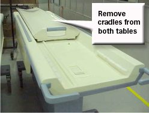
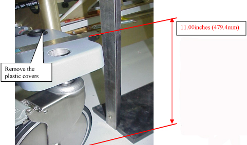
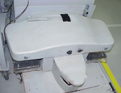
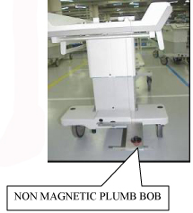
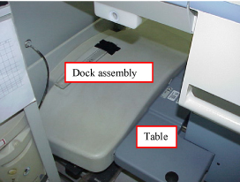
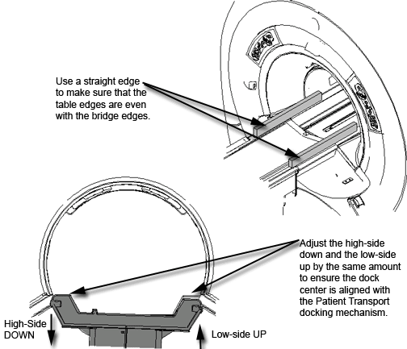
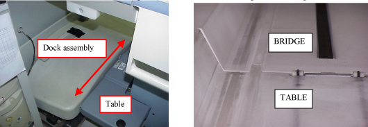

Operating Documentation
Direction 5133330-3, Rev# 14
Signa EXCITE HD 3.0T Service Methods
Module Version 17.0, Version Date 1/5/11
Operating Documentation |
| Required Persons | Preliminary Reqs | Procedure | Finalization |
|---|---|---|---|
| 1 or 2, depending on system | Not Applicable | 2 hours | Not Applicable |
These procedures are applicable to the following table products:
Signa Lightweight Patient Transport Table
Signa Oncology Patient Transport Table Option
Signa OR-Compatible Patient Transport Table Option
The alignment procedure requires:
One person for a Signa Lightweight Patient Transport Table
Two people for a Signa Oncology or Signa OR-Compatible Patient Transport Table Option
| Item | Qty | Effectivity | Part# | Manufacturer | |
|---|---|---|---|---|---|
| Nonmagnetic Tool Kit | 1 | - | - | - | |
| Nonferrous Plumb Bob | 1 | - | - | - | |
| Nonferrous Measuring Tool, minimum 12 in. (300 mm) | 1 | - | - | - | |
| Nonferrous Level | 1 | - | - | - | |
| Item | Qty | Effectivity | Part# | Manufacturer |
|---|---|---|---|---|
| Marking Tape, 12 in. (300 mm) | 1 | - | - | - |
| ||||
| Strong Magnetic Field! | ||||
| Ferrous hand tools can become dangerous Projectiles in the vicinity of the system magnet. | ||||
| Do not use any magnetic/ferrous tools or equipment inside the magnet room. |
| ||||
| risk of personal injury! | ||||
| Lifting Mr parts, such as field Replaceable Units, toolkits and system parts without assistance (mechanical or additional personnel) can result in personal injury. | ||||
| THE USE OF EXTRA PERSONNEL IS RECOMMENDED TO LIFT AN OBJECT WEIGHING MORE THAN 35 POUNDS AND LESS THAN 50 POUNDS. ANY WEIGHT GREATER THAN 50 POUNDS REQUIRES THE USE OF additional PERSONNEL. |
| Condition | Reference | Effectivity |
|---|---|---|
Review the following prior to completing this procedure: Dock Centering and Hardware Adjustments, Table Top Height Adjustment | - | - |
Remove the cradles from both tables (shown below), referring to Removing Cradle Assembly.
Illustration 1: Removing Cradles from Tables

Remove the plastic covers (shown below) from the castings.
Illustration 2: Caster Cover and Height

Center the dock assembly with the bridge, and loosely attach it to the front of the magnet as shown below. (Do not secure the dock to the magnet or floor at this time. Centering will be accomplished later.)
Illustration 3: Attaching Table Dock Assembly

| ||||
| Personal injury and equipment damage! | ||||
| Strong Magnetic Field present. | ||||
| When servicing any magnetic equipment, it is critically
important that the service engineer consciously plan the path to be
taken when moving highly ferrous devices in the magnet environment.
the path should be as far from the magnet as practical. Safety Requirements:
When planning a service path, it is critical that the path be clear and sufficiently wide. Ensure that there are no trip hazards, obstacles, clutter, slippery surfaces or other items even partially restricting the path. If there are portable obstacles in a path, remove them from the area and replace them after the service action is completed. It is required to walk the path prior to beginning service to ensure that there is sufficient space through which to pass for yourself and the object being serviced. |
| ||||
| POSSIBLE PERSONAL INJURY! | ||||
| TO OPPOSE ANY PULL FROM THE MAGNET, FIELD ENGINEERS MUST APPLY CONTINUOUS DOWNWARD PRESSURE TO THE TOP OF THE DOCK whenever the dock mounting hardware is loose | ||||
| DO NOT PLACE ANY PART OF THE HUMAN BODY IN THE PATH BETWEEN THE DOCK AND THE MAGNET. |
Center the dock assembly by using a Plumb Bob (nonmagnetic) as shown below.
Illustration 4: Centering Dock Assembly

Use the 3/4 in. socket to adjust both front casters of the table so the top of the casting above the wheel is 11.0 in. (279.4 mm) from the floor. (See Illustration 2.)
Position the table to the dock as shown, taking care not to move the dock. Do not actuate the docking pedal.
Illustration 5: Positioning Table to Dock

With Table 1 fully elevated, align the table top to the bridge, which should be flush to 1 mm below the end bells per the appropriate Bridge Removal and Replacement procedure for the system.
If the system has a long bridge, use Bridge Removal and Replacement.
If the system has a split bridge, use Bridge Removal and Replacement.
| ||||
| Over adjusting the caster adjustment will lead to caster damage. Do NOT exceed the ±0.25 in. (6.35 mm) tolerance. | ||||
Adjust the front two casters as shown below. Raise and lower the casters as needed, while keeping the center (between the two casters) close to the 11 in. (279.4 mm) height.
Illustration 6: Aligning Patient Transport Surface to Bridge

The casters should never be adjusted more than ±0.25 in. (6.35 mm), as shown below, from the 11 in. (279.4 mm) height.
Adjusting the high side down and the low side up by the same amount ensures the dock center will stay aligned with the Patient Transport docking mechanism.
Illustration 7: Caster Adjustment Warning

Move the table and dock left or right until the table rail and the bridge rail are in alignment as shown.
Illustration 8: Aligning Bridge and Cradle

| ||||
| POSSIBLE PERSONAL INJURY! | ||||
| THE DOCK CONTAINS HIGHLY FERROUS MATERIAL. THIS PROCEDURE REQUIRES MOVEMENT OF FERROUS MATERIAL IN CLOSE PROXIMITY TO THE MAGNET. | ||||
| two (2) Field engineers are required at all times. |
| ||||
| POSSIBLE PERSONAL INJURY! | ||||
| TO OPPOSE ANY PULL FROM THE MAGNET, FIELD ENGINEERS MUST APPLY CONTINUOUS DOWNWARD PRESSURE TO THE TOP OF THE DOCK whenever the dock mounting hardware is loose. | ||||
| DO NOT PLACE ANY PART OF THE HUMAN BODY IN THE PATH BETWEEN THE DOCK AND THE MAGNET. |
Place a piece of marking tape on the floor adjacent to the side of the dock.
Repeat Step 6 through Step 10 for Table 2 and continue to next substep.
Mark the centerpoint between the two marks as shown.
Shift the dock assembly to align with the centerpoint mark.
Illustration 9: Example of Centerpoint Between Two Table Marks

Secure the dock assembly in position.
Complete the final lateral alignment by adjusting the front two casters if necessary. Raise and lower the casters as needed while keeping the center (between the two casters) close to the 11 in. (279.4 mm) height. Remember: The casters should not be adjusted more than ±0.25 in. (6.35 mm) as shown in Illustration 7.
Tighten the bushing screw at on each caster.
No finalization steps.